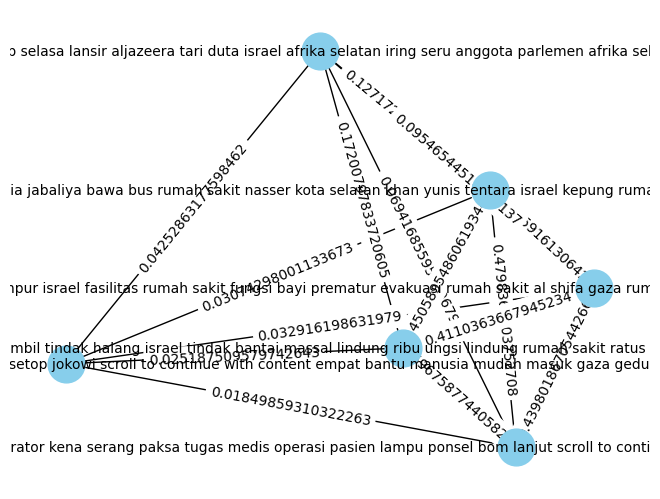

##Crawling data dengan beautifulsoup
!pip install requests
!pip install beautifulsoup4
Requirement already satisfied: requests in /usr/local/lib/python3.10/dist-packages (2.31.0)
Requirement already satisfied: charset-normalizer<4,>=2 in /usr/local/lib/python3.10/dist-packages (from requests) (3.3.2)
Requirement already satisfied: idna<4,>=2.5 in /usr/local/lib/python3.10/dist-packages (from requests) (3.6)
Requirement already satisfied: urllib3<3,>=1.21.1 in /usr/local/lib/python3.10/dist-packages (from requests) (2.0.7)
Requirement already satisfied: certifi>=2017.4.17 in /usr/local/lib/python3.10/dist-packages (from requests) (2023.11.17)
Requirement already satisfied: beautifulsoup4 in /usr/local/lib/python3.10/dist-packages (4.11.2)
Requirement already satisfied: soupsieve>1.2 in /usr/local/lib/python3.10/dist-packages (from beautifulsoup4) (2.5)
Mengambil berita dari Detik.com#
import requests
from bs4 import BeautifulSoup
import csv
import pandas as pd
pencarian = 'gaza'
cari = pencarian.replace(' ','+')
tglAwal = '31/10/2022'
tglAkhir = '31/11/2023'
header={
'user-agent':'Mozilla/5.0 (Windows NT 10.0; Win64; x64) AppleWebKit/537.36 (KHTML, like Gecko) Chrome/109.0.0.0 Safari/537.36'
}
berita_list = []
for halaman in range(1):
url = f'https://www.detik.com/search/searchall?query={cari}&sortby=time&fromdatex={tglAwal}&todatex={tglAkhir}&page={halaman}'
#mengambil data dari detik.com
req = requests.get(url,header)
soup = BeautifulSoup(req.text,'lxml')
listberita = soup.find('div',class_='list media_rows list-berita')
artikel = listberita.find_all('article')
for x in artikel:
url2 = x.find('a')['href']
judul = x.find('a').find('h2').text
#mengambil data dari setiap konten
urlkonten = requests.get(url2,header)
soupkonten = BeautifulSoup(urlkonten.text,'lxml')
konten = soupkonten.find_all('div',class_='detail__body-text itp_bodycontent')
for x in konten:
isi = x.find_all('p')
y = [y.text for y in isi]
fixkonten = ''.join(y).replace('\n','').replace('ADVERTISEMENT','').replace('SCROLL TO RESUME CONTENT','')
berita_list.append([judul,fixkonten])
###Berita berupa list dibuat kedalam DataFrame Pandas
frame_berita = pd.DataFrame(berita_list,columns =['Judul','Isi'])
frame_berita
| Judul | Isi | |
|---|---|---|
| 0 | Geger Tentara Israel Telanjangi Puluhan Pria d... | Pemerintahan Amerika Serikat (AS) menanggapi f... |
| 1 | Lebih dari 18.200 Warga Gaza Tewas dalam Peran... | Perang antara kelompok Hamas dan pasukan Israe... |
| 2 | Zara Take Down Iklan Usai Ramai Seruan Boikot | Zara memutuskan untuk menarik iklan yang mempe... |
| 3 | Pilu di Gaza, Dokter pun Kelaparan | Suasana di Gaza masih menghadirkan pilu dan ne... |
| 4 | Masjid ke-104 di Gaza yang Dihancurkan Israel | Israel terus memberikan teror mengerikan di Ga... |
| 5 | Bisa-bisanya Israel Bilang 'Hal Biasa' soal Te... | Israel dikecam usai melucuti pakaian puluhan p... |
| 6 | OKI Kecam DK PBB yang Gagal Setujui Resolusi G... | Organisasi Kerja Sama Islam (OKI) mengecam keg... |
| 7 | Diikuti Ribuan Orang, Aksi Lawan Antisemitisme... | Ribuan orang di ibu kota Jerman, Berlin, turun... |
frame_berita.to_csv('databerita.csv',sep=';',index=False)
###Membuat token dari Isi berita
!pip install sastrawi
import numpy as np
import re, string
import nltk
from tqdm.auto import tqdm
nltk.download('popular')
nltk.download('stopwords')
tqdm.pandas()
from nltk.tokenize import word_tokenize
from nltk.corpus import stopwords
from itertools import chain
Requirement already satisfied: sastrawi in /usr/local/lib/python3.10/dist-packages (1.0.1)
[nltk_data] Downloading collection 'popular'
[nltk_data] |
[nltk_data] | Downloading package cmudict to /root/nltk_data...
[nltk_data] | Package cmudict is already up-to-date!
[nltk_data] | Downloading package gazetteers to /root/nltk_data...
[nltk_data] | Package gazetteers is already up-to-date!
[nltk_data] | Downloading package genesis to /root/nltk_data...
[nltk_data] | Package genesis is already up-to-date!
[nltk_data] | Downloading package gutenberg to /root/nltk_data...
[nltk_data] | Package gutenberg is already up-to-date!
[nltk_data] | Downloading package inaugural to /root/nltk_data...
[nltk_data] | Package inaugural is already up-to-date!
[nltk_data] | Downloading package movie_reviews to
[nltk_data] | /root/nltk_data...
[nltk_data] | Package movie_reviews is already up-to-date!
[nltk_data] | Downloading package names to /root/nltk_data...
[nltk_data] | Package names is already up-to-date!
[nltk_data] | Downloading package shakespeare to /root/nltk_data...
[nltk_data] | Package shakespeare is already up-to-date!
[nltk_data] | Downloading package stopwords to /root/nltk_data...
[nltk_data] | Package stopwords is already up-to-date!
[nltk_data] | Downloading package treebank to /root/nltk_data...
[nltk_data] | Package treebank is already up-to-date!
[nltk_data] | Downloading package twitter_samples to
[nltk_data] | /root/nltk_data...
[nltk_data] | Package twitter_samples is already up-to-date!
[nltk_data] | Downloading package omw to /root/nltk_data...
[nltk_data] | Package omw is already up-to-date!
[nltk_data] | Downloading package omw-1.4 to /root/nltk_data...
[nltk_data] | Package omw-1.4 is already up-to-date!
[nltk_data] | Downloading package wordnet to /root/nltk_data...
[nltk_data] | Package wordnet is already up-to-date!
[nltk_data] | Downloading package wordnet2021 to /root/nltk_data...
[nltk_data] | Package wordnet2021 is already up-to-date!
[nltk_data] | Downloading package wordnet31 to /root/nltk_data...
[nltk_data] | Package wordnet31 is already up-to-date!
[nltk_data] | Downloading package wordnet_ic to /root/nltk_data...
[nltk_data] | Package wordnet_ic is already up-to-date!
[nltk_data] | Downloading package words to /root/nltk_data...
[nltk_data] | Package words is already up-to-date!
[nltk_data] | Downloading package maxent_ne_chunker to
[nltk_data] | /root/nltk_data...
[nltk_data] | Package maxent_ne_chunker is already up-to-date!
[nltk_data] | Downloading package punkt to /root/nltk_data...
[nltk_data] | Package punkt is already up-to-date!
[nltk_data] | Downloading package snowball_data to
[nltk_data] | /root/nltk_data...
[nltk_data] | Package snowball_data is already up-to-date!
[nltk_data] | Downloading package averaged_perceptron_tagger to
[nltk_data] | /root/nltk_data...
[nltk_data] | Package averaged_perceptron_tagger is already up-
[nltk_data] | to-date!
[nltk_data] |
[nltk_data] Done downloading collection popular
[nltk_data] Downloading package stopwords to /root/nltk_data...
[nltk_data] Package stopwords is already up-to-date!
# Text Cleaning
def cleaning(text):
# Menghapus tag HTML
text = re.compile('<.*?>|&([a-z0-9]+|#[0-9]{1,6}|#x[0-9a-f]{1,6});').sub('', str(text))
# Mengubah seluruh teks menjadi huruf kecil
text = text.lower()
# Menghapus spasi pada teks
text = text.strip()
# Menghapus Tanda Baca, karakter spesial, and spasi ganda
text = re.compile('<.*?>').sub('', text)
text = re.compile('[%s]' % re.escape(string.punctuation)).sub(' ', text)
text = re.sub('\s+', ' ', text)
text = re.sub(r'\n', ' ', text)
text = re.sub("â", "", text)
# Menghapus Nomor
text = re.sub(r'\[[0-9]*\]', ' ', text)
text = re.sub(r'[^\w\s]', '', str(text).lower().strip())
text = re.sub(r'\d', ' ', text)
text = re.sub(r'\s+', ' ', text)
# Mengubah text yang berisi 'nan' dengan whitespace agar nantinya dapat dihapus
text = re.sub('nan', '', text)
return text
###Load data berita_csv
# df = pd.read_csv('databerita.csv',delimiter=';')
# df = df.loc[:, ~df.columns.str.contains('^Unnamed')]
###Load data dari crawl berita di web
df = frame_berita
df.head()
| Judul | Isi | |
|---|---|---|
| 0 | Geger Tentara Israel Telanjangi Puluhan Pria d... | Pemerintahan Amerika Serikat (AS) menanggapi f... |
| 1 | Lebih dari 18.200 Warga Gaza Tewas dalam Peran... | Perang antara kelompok Hamas dan pasukan Israe... |
| 2 | Zara Take Down Iklan Usai Ramai Seruan Boikot | Zara memutuskan untuk menarik iklan yang mempe... |
| 3 | Pilu di Gaza, Dokter pun Kelaparan | Suasana di Gaza masih menghadirkan pilu dan ne... |
| 4 | Masjid ke-104 di Gaza yang Dihancurkan Israel | Israel terus memberikan teror mengerikan di Ga... |
# df = df[0:1]
df.tail()
| Judul | Isi | |
|---|---|---|
| 3 | Pilu di Gaza, Dokter pun Kelaparan | Suasana di Gaza masih menghadirkan pilu dan ne... |
| 4 | Masjid ke-104 di Gaza yang Dihancurkan Israel | Israel terus memberikan teror mengerikan di Ga... |
| 5 | Bisa-bisanya Israel Bilang 'Hal Biasa' soal Te... | Israel dikecam usai melucuti pakaian puluhan p... |
| 6 | OKI Kecam DK PBB yang Gagal Setujui Resolusi G... | Organisasi Kerja Sama Islam (OKI) mengecam keg... |
| 7 | Diikuti Ribuan Orang, Aksi Lawan Antisemitisme... | Ribuan orang di ibu kota Jerman, Berlin, turun... |
###Clean text pada Isi berita
df['clean'] = df['Isi'].apply(lambda x: cleaning(x))
df.head()
| Judul | Isi | clean | |
|---|---|---|---|
| 0 | Geger Tentara Israel Telanjangi Puluhan Pria d... | Pemerintahan Amerika Serikat (AS) menanggapi f... | pemerintahan amerika serikat as meggapi foto f... |
| 1 | Lebih dari 18.200 Warga Gaza Tewas dalam Peran... | Perang antara kelompok Hamas dan pasukan Israe... | perang antara kelompok hamas dan pasukan israe... |
| 2 | Zara Take Down Iklan Usai Ramai Seruan Boikot | Zara memutuskan untuk menarik iklan yang mempe... | zara memutuskan untuk menarik iklan yang mempe... |
| 3 | Pilu di Gaza, Dokter pun Kelaparan | Suasana di Gaza masih menghadirkan pilu dan ne... | suasana di gaza masih menghadirkan pilu dan ne... |
| 4 | Masjid ke-104 di Gaza yang Dihancurkan Israel | Israel terus memberikan teror mengerikan di Ga... | israel terus memberikan teror mengerikan di ga... |
df.tail()
| Judul | Isi | clean | |
|---|---|---|---|
| 3 | Pilu di Gaza, Dokter pun Kelaparan | Suasana di Gaza masih menghadirkan pilu dan ne... | suasana di gaza masih menghadirkan pilu dan ne... |
| 4 | Masjid ke-104 di Gaza yang Dihancurkan Israel | Israel terus memberikan teror mengerikan di Ga... | israel terus memberikan teror mengerikan di ga... |
| 5 | Bisa-bisanya Israel Bilang 'Hal Biasa' soal Te... | Israel dikecam usai melucuti pakaian puluhan p... | israel dikecam usai melucuti pakaian puluhan p... |
| 6 | OKI Kecam DK PBB yang Gagal Setujui Resolusi G... | Organisasi Kerja Sama Islam (OKI) mengecam keg... | organisasi kerja sama islam oki mengecam kegag... |
| 7 | Diikuti Ribuan Orang, Aksi Lawan Antisemitisme... | Ribuan orang di ibu kota Jerman, Berlin, turun... | ribuan orang di ibu kota jerman berlin turun k... |
###Tokenize pada isi berita
df['tokenize'] = df['clean'].apply(lambda x: word_tokenize(x))
# df['tokenize'] = df['tokenize'].apply(lambda tokens: ' '.join(tokens))
df.head()
| Judul | Isi | clean | tokenize | |
|---|---|---|---|---|
| 0 | Geger Tentara Israel Telanjangi Puluhan Pria d... | Pemerintahan Amerika Serikat (AS) menanggapi f... | pemerintahan amerika serikat as meggapi foto f... | [pemerintahan, amerika, serikat, as, meggapi, ... |
| 1 | Lebih dari 18.200 Warga Gaza Tewas dalam Peran... | Perang antara kelompok Hamas dan pasukan Israe... | perang antara kelompok hamas dan pasukan israe... | [perang, antara, kelompok, hamas, dan, pasukan... |
| 2 | Zara Take Down Iklan Usai Ramai Seruan Boikot | Zara memutuskan untuk menarik iklan yang mempe... | zara memutuskan untuk menarik iklan yang mempe... | [zara, memutuskan, untuk, menarik, iklan, yang... |
| 3 | Pilu di Gaza, Dokter pun Kelaparan | Suasana di Gaza masih menghadirkan pilu dan ne... | suasana di gaza masih menghadirkan pilu dan ne... | [suasana, di, gaza, masih, menghadirkan, pilu,... |
| 4 | Masjid ke-104 di Gaza yang Dihancurkan Israel | Israel terus memberikan teror mengerikan di Ga... | israel terus memberikan teror mengerikan di ga... | [israel, terus, memberikan, teror, mengerikan,... |
df.tail()
| Judul | Isi | clean | tokenize | |
|---|---|---|---|---|
| 3 | Pilu di Gaza, Dokter pun Kelaparan | Suasana di Gaza masih menghadirkan pilu dan ne... | suasana di gaza masih menghadirkan pilu dan ne... | [suasana, di, gaza, masih, menghadirkan, pilu,... |
| 4 | Masjid ke-104 di Gaza yang Dihancurkan Israel | Israel terus memberikan teror mengerikan di Ga... | israel terus memberikan teror mengerikan di ga... | [israel, terus, memberikan, teror, mengerikan,... |
| 5 | Bisa-bisanya Israel Bilang 'Hal Biasa' soal Te... | Israel dikecam usai melucuti pakaian puluhan p... | israel dikecam usai melucuti pakaian puluhan p... | [israel, dikecam, usai, melucuti, pakaian, pul... |
| 6 | OKI Kecam DK PBB yang Gagal Setujui Resolusi G... | Organisasi Kerja Sama Islam (OKI) mengecam keg... | organisasi kerja sama islam oki mengecam kegag... | [organisasi, kerja, sama, islam, oki, mengecam... |
| 7 | Diikuti Ribuan Orang, Aksi Lawan Antisemitisme... | Ribuan orang di ibu kota Jerman, Berlin, turun... | ribuan orang di ibu kota jerman berlin turun k... | [ribuan, orang, di, ibu, kota, jerman, berlin,... |
###Menghapus stopword yang ada di isi berita
stop_words = set(chain(stopwords.words('indonesian')))
df['remove_stopword'] = df['tokenize'].apply(lambda x: [w for w in x if not w in stop_words])
# df['remove_stopword'] = df['remove_stopword'].apply(lambda tokens: ' '.join(tokens))
df.head()
| Judul | Isi | clean | tokenize | remove_stopword | |
|---|---|---|---|---|---|
| 0 | Geger Tentara Israel Telanjangi Puluhan Pria d... | Pemerintahan Amerika Serikat (AS) menanggapi f... | pemerintahan amerika serikat as meggapi foto f... | [pemerintahan, amerika, serikat, as, meggapi, ... | [pemerintahan, amerika, serikat, as, meggapi, ... |
| 1 | Lebih dari 18.200 Warga Gaza Tewas dalam Peran... | Perang antara kelompok Hamas dan pasukan Israe... | perang antara kelompok hamas dan pasukan israe... | [perang, antara, kelompok, hamas, dan, pasukan... | [perang, kelompok, hamas, pasukan, israel, ber... |
| 2 | Zara Take Down Iklan Usai Ramai Seruan Boikot | Zara memutuskan untuk menarik iklan yang mempe... | zara memutuskan untuk menarik iklan yang mempe... | [zara, memutuskan, untuk, menarik, iklan, yang... | [zara, memutuskan, menarik, iklan, boneka, ang... |
| 3 | Pilu di Gaza, Dokter pun Kelaparan | Suasana di Gaza masih menghadirkan pilu dan ne... | suasana di gaza masih menghadirkan pilu dan ne... | [suasana, di, gaza, masih, menghadirkan, pilu,... | [suasana, gaza, menghadirkan, pilu, nestapa, d... |
| 4 | Masjid ke-104 di Gaza yang Dihancurkan Israel | Israel terus memberikan teror mengerikan di Ga... | israel terus memberikan teror mengerikan di ga... | [israel, terus, memberikan, teror, mengerikan,... | [israel, teror, mengerikan, gaza, teranyar, ma... |
###Streming pada isi berita
from Sastrawi.Stemmer.StemmerFactory import StemmerFactory
from tqdm.auto import tqdm
factory = StemmerFactory()
stemmer = factory.create_stemmer()
df['steming'] = df['remove_stopword'].progress_apply(lambda x: stemmer.stem(' '.join(x)).split(' '))
---------------------------------------------------------------------------
KeyboardInterrupt Traceback (most recent call last)
<ipython-input-26-5fbad4693f1e> in <cell line: 1>()
----> 1 df['steming'] = df['remove_stopword'].progress_apply(lambda x: stemmer.stem(' '.join(x)).split(' '))
/usr/local/lib/python3.10/dist-packages/tqdm/std.py in inner(df, func, *args, **kwargs)
918 # on the df using our wrapper (which provides bar updating)
919 try:
--> 920 return getattr(df, df_function)(wrapper, **kwargs)
921 finally:
922 t.close()
/usr/local/lib/python3.10/dist-packages/pandas/core/series.py in apply(self, func, convert_dtype, args, **kwargs)
4769 dtype: float64
4770 """
-> 4771 return SeriesApply(self, func, convert_dtype, args, kwargs).apply()
4772
4773 def _reduce(
/usr/local/lib/python3.10/dist-packages/pandas/core/apply.py in apply(self)
1121
1122 # self.f is Callable
-> 1123 return self.apply_standard()
1124
1125 def agg(self):
/usr/local/lib/python3.10/dist-packages/pandas/core/apply.py in apply_standard(self)
1172 else:
1173 values = obj.astype(object)._values
-> 1174 mapped = lib.map_infer(
1175 values,
1176 f,
/usr/local/lib/python3.10/dist-packages/pandas/_libs/lib.pyx in pandas._libs.lib.map_infer()
/usr/local/lib/python3.10/dist-packages/tqdm/std.py in wrapper(*args, **kwargs)
913 # take a fast or slow code path; so stop when t.total==t.n
914 t.update(n=1 if not t.total or t.n < t.total else 0)
--> 915 return func(*args, **kwargs)
916
917 # Apply the provided function (in **kwargs)
<ipython-input-26-5fbad4693f1e> in <lambda>(x)
----> 1 df['steming'] = df['remove_stopword'].progress_apply(lambda x: stemmer.stem(' '.join(x)).split(' '))
/usr/local/lib/python3.10/dist-packages/Sastrawi/Stemmer/CachedStemmer.py in stem(self, text)
18 stems.append(self.cache.get(word))
19 else:
---> 20 stem = self.delegatedStemmer.stem(word)
21 self.cache.set(word, stem)
22 stems.append(stem)
/usr/local/lib/python3.10/dist-packages/Sastrawi/Stemmer/Stemmer.py in stem(self, text)
25
26 for word in words:
---> 27 stems.append(self.stem_word(word))
28
29 return ' '.join(stems)
/usr/local/lib/python3.10/dist-packages/Sastrawi/Stemmer/Stemmer.py in stem_word(self, word)
34 return self.stem_plural_word(word)
35 else:
---> 36 return self.stem_singular_word(word)
37
38 def is_plural(self, word):
/usr/local/lib/python3.10/dist-packages/Sastrawi/Stemmer/Stemmer.py in stem_singular_word(self, word)
82 """Stem a singular word to its common stem form."""
83 context = Context(word, self.dictionary, self.visitor_provider)
---> 84 context.execute()
85
86 return context.result
/usr/local/lib/python3.10/dist-packages/Sastrawi/Stemmer/Context/Context.py in execute(self)
35
36 #step 1 - 5
---> 37 self.start_stemming_process()
38
39 #step 6
/usr/local/lib/python3.10/dist-packages/Sastrawi/Stemmer/Context/Context.py in start_stemming_process(self)
58 if csPrecedenceAdjustmentSpecification.is_satisfied_by(self.original_word):
59 #step 4, 5
---> 60 self.remove_prefixes()
61 if self.dictionary.contains(self.current_word):
62 return
/usr/local/lib/python3.10/dist-packages/Sastrawi/Stemmer/Context/Context.py in remove_prefixes(self)
87 def remove_prefixes(self):
88 for i in range(3):
---> 89 self.accept_prefix_visitors(self.prefix_pisitors)
90 if self.dictionary.contains(self.current_word):
91 return
/usr/local/lib/python3.10/dist-packages/Sastrawi/Stemmer/Context/Context.py in accept_prefix_visitors(self, visitors)
108 removalCount = len(self.removals)
109 for visitor in visitors:
--> 110 self.accept(visitor)
111 if self.dictionary.contains(self.current_word):
112 return self.current_word
/usr/local/lib/python3.10/dist-packages/Sastrawi/Stemmer/Context/Context.py in accept(self, visitor)
95
96 def accept(self, visitor):
---> 97 visitor.visit(self)
98
99 def accept_visitors(self, visitors):
/usr/local/lib/python3.10/dist-packages/Sastrawi/Stemmer/Context/Visitor/AbstractDisambiguatePrefixRule.py in visit(self, context)
13 for disambiguator in self.disambiguators:
14 result = disambiguator.disambiguate(context.current_word)
---> 15 if context.dictionary.contains(result):
16 break
17
KeyboardInterrupt:
df.head()
| Judul | Isi | clean | tokenize | remove_stopword | steming | |
|---|---|---|---|---|---|---|
| 0 | Saat Jokowi Desak Gencatan Senjata di Gaza Dib... | Presiden Joko Widodo (Jokowi) mengungkap cerit... | presiden joko widodo jokowi mengungkap cerita ... | [presiden, joko, widodo, jokowi, mengungkap, c... | [presiden, joko, widodo, jokowi, mengungkap, c... | [presiden, joko, widodo, jokowi, ungkap, cerit... |
| 1 | RS Indonesia di Gaza Diserang Israel, 8 Orang ... | Rumah Sakit (RS) Indonesia di Gaza dilaporkan ... | rumah sakit rs indonesia di gaza dilaporkan di... | [rumah, sakit, rs, indonesia, di, gaza, dilapo... | [rumah, sakit, rs, indonesia, gaza, dilaporkan... | [rumah, sakit, rs, indonesia, gaza, lapor, ser... |
| 2 | 200 Pasien Dievakuasi dari Rumah Sakit Indones... | Sebanyak 200 pasien dievakuasi dari RS Indones... | sebanyak pasien dievakuasi dari rs indonesia d... | [sebanyak, pasien, dievakuasi, dari, rs, indon... | [pasien, dievakuasi, rs, indonesia, gaza, diev... | [pasien, evakuasi, rs, indonesia, gaza, evakua... |
| 3 | Israel Tarik Duta Besar dari Afrika Selatan | Kementerian Luar Negeri Israel memutuskan mena... | kementerian luar negeri israel memutuskan mena... | [kementerian, luar, negeri, israel, memutuskan... | [kementerian, negeri, israel, memutuskan, mena... | [menteri, negeri, israel, putus, tarik, duta, ... |
| 4 | Hamas: 13.300 Orang di Gaza Tewas Sejak 7 Oktober | Hamas melaporkan jumlah korban tewas seiring g... | hamas melaporkan jumlah korban tewas seiring g... | [hamas, melaporkan, jumlah, korban, tewas, sei... | [hamas, melaporkan, korban, tewas, seiring, ge... | [hamas, lapor, korban, tewas, iring, gempur, i... |
df['Isi_terbaru'] = df['steming'].apply(lambda tokens: ' '.join(tokens))
df['Isi_terbaru']
0 presiden joko widodo jokowi ungkap cerita temu...
1 rumah sakit rs indonesia gaza lapor serang mil...
2 pasien evakuasi rs indonesia gaza evakuasi ban...
3 menteri negeri israel putus tarik duta besar p...
4 hamas lapor korban tewas iring gempur israel g...
5 perintah qatar kecam keras serang israel rumah...
6 rumah sakit indonesia jalur gaza utara sasar s...
7 korban tewas akibat konflik gaza palestina leb...
Name: Isi_terbaru, dtype: object
###Term Frekuensi
from sklearn.feature_extraction.text import CountVectorizer
count_vectorizer = CountVectorizer()
df['Isi_terbaru'].fillna('', inplace=True)
X_count = count_vectorizer.fit_transform(np.array(df['Isi_terbaru']))
terms_count = count_vectorizer.get_feature_names_out()
df_countvect = pd.DataFrame(data = X_count.toarray(),columns = terms_count)
df_countvect
| adhanom | adil | afp | afrika | aju | akibat | al | aljazeera | ambil | amerika | ... | wafa | wanita | warga | white | who | widodo | with | wni | yerusalem | yunis | |
|---|---|---|---|---|---|---|---|---|---|---|---|---|---|---|---|---|---|---|---|---|---|
| 0 | 0 | 0 | 0 | 0 | 0 | 0 | 0 | 0 | 0 | 1 | ... | 0 | 0 | 0 | 1 | 0 | 1 | 1 | 0 | 0 | 0 |
| 1 | 0 | 0 | 0 | 0 | 0 | 2 | 2 | 0 | 0 | 0 | ... | 1 | 0 | 1 | 0 | 0 | 0 | 1 | 0 | 0 | 0 |
| 2 | 0 | 0 | 1 | 0 | 0 | 0 | 3 | 0 | 0 | 0 | ... | 0 | 0 | 0 | 0 | 0 | 0 | 1 | 0 | 0 | 1 |
| 3 | 0 | 2 | 1 | 8 | 1 | 0 | 0 | 1 | 0 | 0 | ... | 0 | 0 | 0 | 0 | 0 | 0 | 1 | 0 | 1 | 0 |
| 4 | 0 | 0 | 1 | 0 | 0 | 0 | 2 | 0 | 0 | 0 | ... | 0 | 0 | 0 | 0 | 0 | 0 | 1 | 3 | 0 | 0 |
| 5 | 0 | 0 | 1 | 0 | 0 | 2 | 7 | 0 | 1 | 0 | ... | 2 | 1 | 1 | 0 | 0 | 0 | 1 | 0 | 0 | 0 |
| 6 | 1 | 0 | 1 | 0 | 0 | 2 | 7 | 0 | 0 | 0 | ... | 2 | 1 | 0 | 0 | 3 | 0 | 1 | 0 | 0 | 0 |
| 7 | 0 | 0 | 0 | 0 | 0 | 1 | 0 | 0 | 0 | 0 | ... | 0 | 1 | 0 | 0 | 0 | 0 | 1 | 0 | 0 | 0 |
8 rows × 317 columns
token_counts = df_countvect.sum(axis=0)
non_zero_token_counts = token_counts[token_counts != 0]
print("Token Counts yang Tidak Sama dengan 0:")
print(non_zero_token_counts)
Token Counts yang Tidak Sama dengan 0:
adhanom 1
adil 2
afp 5
afrika 8
aju 1
..
widodo 1
with 8
wni 3
yerusalem 1
yunis 1
Length: 317, dtype: int64
###TF-IDF
from sklearn.feature_extraction.text import TfidfVectorizer
vectorizer = TfidfVectorizer()
X_tfidf = vectorizer.fit_transform(df['Isi_terbaru'].tolist())
terms = vectorizer.get_feature_names_out()
df_tfidfvect = pd.DataFrame(data = X_tfidf.toarray(),columns = terms)
df_tfidfvect
| adhanom | adil | afp | afrika | aju | akibat | al | aljazeera | ambil | amerika | ... | wafa | wanita | warga | white | who | widodo | with | wni | yerusalem | yunis | |
|---|---|---|---|---|---|---|---|---|---|---|---|---|---|---|---|---|---|---|---|---|---|
| 0 | 0.000000 | 0.000000 | 0.000000 | 0.000000 | 0.000000 | 0.000000 | 0.000000 | 0.000000 | 0.000000 | 0.053258 | ... | 0.000000 | 0.000000 | 0.000000 | 0.053258 | 0.000000 | 0.053258 | 0.021268 | 0.000000 | 0.000000 | 0.000000 |
| 1 | 0.000000 | 0.000000 | 0.000000 | 0.000000 | 0.000000 | 0.107046 | 0.094754 | 0.000000 | 0.000000 | 0.000000 | ... | 0.061045 | 0.000000 | 0.070742 | 0.000000 | 0.000000 | 0.000000 | 0.033709 | 0.000000 | 0.000000 | 0.000000 |
| 2 | 0.000000 | 0.000000 | 0.065087 | 0.000000 | 0.000000 | 0.000000 | 0.195260 | 0.000000 | 0.000000 | 0.000000 | ... | 0.000000 | 0.000000 | 0.000000 | 0.000000 | 0.000000 | 0.000000 | 0.046310 | 0.000000 | 0.000000 | 0.115963 |
| 3 | 0.000000 | 0.140017 | 0.039294 | 0.560067 | 0.070008 | 0.000000 | 0.000000 | 0.070008 | 0.000000 | 0.000000 | ... | 0.000000 | 0.000000 | 0.000000 | 0.000000 | 0.000000 | 0.000000 | 0.027958 | 0.000000 | 0.070008 | 0.000000 |
| 4 | 0.000000 | 0.000000 | 0.050803 | 0.000000 | 0.000000 | 0.000000 | 0.101605 | 0.000000 | 0.000000 | 0.000000 | ... | 0.000000 | 0.000000 | 0.000000 | 0.000000 | 0.000000 | 0.000000 | 0.036147 | 0.271541 | 0.000000 | 0.000000 |
| 5 | 0.000000 | 0.000000 | 0.030254 | 0.000000 | 0.000000 | 0.068358 | 0.211780 | 0.000000 | 0.053903 | 0.000000 | ... | 0.077965 | 0.038982 | 0.045175 | 0.000000 | 0.000000 | 0.000000 | 0.021526 | 0.000000 | 0.000000 | 0.000000 |
| 6 | 0.061618 | 0.000000 | 0.034584 | 0.000000 | 0.000000 | 0.078141 | 0.242090 | 0.000000 | 0.000000 | 0.000000 | ... | 0.089123 | 0.044562 | 0.000000 | 0.000000 | 0.184854 | 0.000000 | 0.024607 | 0.000000 | 0.000000 | 0.000000 |
| 7 | 0.000000 | 0.000000 | 0.000000 | 0.000000 | 0.000000 | 0.199020 | 0.000000 | 0.000000 | 0.000000 | 0.000000 | ... | 0.000000 | 0.226989 | 0.000000 | 0.000000 | 0.000000 | 0.000000 | 0.125344 | 0.000000 | 0.000000 | 0.000000 |
8 rows × 317 columns
###Cosinus Similaritas
from sklearn.metrics.pairwise import cosine_similarity
#kalimat = "".join(df['Isi_terbaru'][0].tolist())
len_kalimat = df['Isi_terbaru'].shape[0]
# tfidf_vectorizer = TfidfVectorizer()
# tfidf_matrix = tfidf_vectorizer.fit_transform([ kalimat1, kalimat2])
temp = []
node = 0
for i in range(len_kalimat):
for j in range(len_kalimat - i):
tfidf_vectorizer = TfidfVectorizer()
tfidf_matrix = tfidf_vectorizer.fit_transform([df['Isi_terbaru'][i], df['Isi_terbaru'][i+j]])
cosine_sim = cosine_similarity(tfidf_matrix[0], tfidf_matrix[1])
similarity_score = cosine_sim[0][0]
temp.append(["node-{} {}&{}".format(node, i, i+j), similarity_score])
node +=1
temp
[['node-0 0&0', 1.0],
['node-1 0&1', 0.024538749296313334],
['node-2 0&2', 0.03739724809786428],
['node-3 0&3', 0.0431361556240332],
['node-4 0&4', 0.05019558046577838],
['node-5 0&5', 0.027669079304474244],
['node-6 0&6', 0.024529314332797383],
['node-7 0&7', 0.060375853156782955],
['node-8 1&1', 1.0000000000000002],
['node-9 1&2', 0.509718210767913],
['node-10 1&3', 0.08575213059319275],
['node-11 1&4', 0.48806304153566954],
['node-12 1&5', 0.6200133129535045],
['node-13 1&6', 0.7208447351149514],
['node-14 1&7', 0.10485440764918551],
['node-15 2&2', 1.0000000000000002],
['node-16 2&3', 0.12108072974561107],
['node-17 2&4', 0.48801611834709935],
['node-18 2&5', 0.4738990797486874],
['node-19 2&6', 0.5037052140476784],
['node-20 2&7', 0.07047992008957371],
['node-21 3&3', 1.0000000000000009],
['node-22 3&4', 0.11816998655829336],
['node-23 3&5', 0.18087601707114997],
['node-24 3&6', 0.09313746654769466],
['node-25 3&7', 0.06379730538145352],
['node-26 4&4', 1.0],
['node-27 4&5', 0.46257784326809886],
['node-28 4&6', 0.462143683093752],
['node-29 4&7', 0.25308689852437993],
['node-30 5&5', 1.0000000000000002],
['node-31 5&6', 0.7078122838239483],
['node-32 5&7', 0.10129494602490838],
['node-33 6&6', 1.0],
['node-34 6&7', 0.09567116756372465],
['node-35 7&7', 0.9999999999999998]]
###Graph
df.head()
| Judul | Isi | clean | tokenize | remove_stopword | steming | Isi_terbaru | |
|---|---|---|---|---|---|---|---|
| 0 | Saat Jokowi Desak Gencatan Senjata di Gaza Dib... | Presiden Joko Widodo (Jokowi) mengungkap cerit... | presiden joko widodo jokowi mengungkap cerita ... | [presiden, joko, widodo, jokowi, mengungkap, c... | [presiden, joko, widodo, jokowi, mengungkap, c... | [presiden, joko, widodo, jokowi, ungkap, cerit... | presiden joko widodo jokowi ungkap cerita temu... |
| 1 | RS Indonesia di Gaza Diserang Israel, 8 Orang ... | Rumah Sakit (RS) Indonesia di Gaza dilaporkan ... | rumah sakit rs indonesia di gaza dilaporkan di... | [rumah, sakit, rs, indonesia, di, gaza, dilapo... | [rumah, sakit, rs, indonesia, gaza, dilaporkan... | [rumah, sakit, rs, indonesia, gaza, lapor, ser... | rumah sakit rs indonesia gaza lapor serang mil... |
| 2 | 200 Pasien Dievakuasi dari Rumah Sakit Indones... | Sebanyak 200 pasien dievakuasi dari RS Indones... | sebanyak pasien dievakuasi dari rs indonesia d... | [sebanyak, pasien, dievakuasi, dari, rs, indon... | [pasien, dievakuasi, rs, indonesia, gaza, diev... | [pasien, evakuasi, rs, indonesia, gaza, evakua... | pasien evakuasi rs indonesia gaza evakuasi ban... |
| 3 | Israel Tarik Duta Besar dari Afrika Selatan | Kementerian Luar Negeri Israel memutuskan mena... | kementerian luar negeri israel memutuskan mena... | [kementerian, luar, negeri, israel, memutuskan... | [kementerian, negeri, israel, memutuskan, mena... | [menteri, negeri, israel, putus, tarik, duta, ... | menteri negeri israel putus tarik duta besar p... |
| 4 | Hamas: 13.300 Orang di Gaza Tewas Sejak 7 Oktober | Hamas melaporkan jumlah korban tewas seiring g... | hamas melaporkan jumlah korban tewas seiring g... | [hamas, melaporkan, jumlah, korban, tewas, sei... | [hamas, melaporkan, korban, tewas, seiring, ge... | [hamas, lapor, korban, tewas, iring, gempur, i... | hamas lapor korban tewas iring gempur israel g... |
df
| Judul | Isi | clean | tokenize | remove_stopword | steming | Isi_terbaru | |
|---|---|---|---|---|---|---|---|
| 0 | Saat Jokowi Desak Gencatan Senjata di Gaza Dib... | Presiden Joko Widodo (Jokowi) mengungkap cerit... | presiden joko widodo jokowi mengungkap cerita ... | [presiden, joko, widodo, jokowi, mengungkap, c... | [presiden, joko, widodo, jokowi, mengungkap, c... | [presiden, joko, widodo, jokowi, ungkap, cerit... | presiden joko widodo jokowi ungkap cerita temu... |
| 1 | RS Indonesia di Gaza Diserang Israel, 8 Orang ... | Rumah Sakit (RS) Indonesia di Gaza dilaporkan ... | rumah sakit rs indonesia di gaza dilaporkan di... | [rumah, sakit, rs, indonesia, di, gaza, dilapo... | [rumah, sakit, rs, indonesia, gaza, dilaporkan... | [rumah, sakit, rs, indonesia, gaza, lapor, ser... | rumah sakit rs indonesia gaza lapor serang mil... |
| 2 | 200 Pasien Dievakuasi dari Rumah Sakit Indones... | Sebanyak 200 pasien dievakuasi dari RS Indones... | sebanyak pasien dievakuasi dari rs indonesia d... | [sebanyak, pasien, dievakuasi, dari, rs, indon... | [pasien, dievakuasi, rs, indonesia, gaza, diev... | [pasien, evakuasi, rs, indonesia, gaza, evakua... | pasien evakuasi rs indonesia gaza evakuasi ban... |
| 3 | Israel Tarik Duta Besar dari Afrika Selatan | Kementerian Luar Negeri Israel memutuskan mena... | kementerian luar negeri israel memutuskan mena... | [kementerian, luar, negeri, israel, memutuskan... | [kementerian, negeri, israel, memutuskan, mena... | [menteri, negeri, israel, putus, tarik, duta, ... | menteri negeri israel putus tarik duta besar p... |
| 4 | Hamas: 13.300 Orang di Gaza Tewas Sejak 7 Oktober | Hamas melaporkan jumlah korban tewas seiring g... | hamas melaporkan jumlah korban tewas seiring g... | [hamas, melaporkan, jumlah, korban, tewas, sei... | [hamas, melaporkan, korban, tewas, seiring, ge... | [hamas, lapor, korban, tewas, iring, gempur, i... | hamas lapor korban tewas iring gempur israel g... |
| 5 | Qatar Kecam Israel yang Serang RS Indonesia: K... | Pemerintah Qatar mengecam keras serangan Israe... | pemerintah qatar mengecam keras serangan israe... | [pemerintah, qatar, mengecam, keras, serangan,... | [pemerintah, qatar, mengecam, keras, serangan,... | [perintah, qatar, kecam, keras, serang, israel... | perintah qatar kecam keras serang israel rumah... |
| 6 | WHO Kaget RS Indonesia di Gaza Diserang | Rumah Sakit Indonesia di Jalur Gaza bagian uta... | rumah sakit indonesia di jalur gaza bagian uta... | [rumah, sakit, indonesia, di, jalur, gaza, bag... | [rumah, sakit, indonesia, jalur, gaza, utara, ... | [rumah, sakit, indonesia, jalur, gaza, utara, ... | rumah sakit indonesia jalur gaza utara sasar s... |
| 7 | Genosida di Gaza Tewaskan Lebih dari13 Ribu Or... | Korban tewas akibat konflik di Gaza, Palestina... | korban tewas akibat konflik di gaza palestina ... | [korban, tewas, akibat, konflik, di, gaza, pal... | [korban, tewas, akibat, konflik, gaza, palesti... | [korban, tewas, akibat, konflik, gaza, palesti... | korban tewas akibat konflik gaza palestina leb... |
import networkx as nx
import matplotlib.pyplot as plt
sentences = [df['Isi_terbaru'][0], df['Isi_terbaru'][1], df['Isi_terbaru'][2],df['Isi_terbaru'][3],df['Isi_terbaru'][4],df['Isi_terbaru'][5]]
tfidf_matrix = tfidf_vectorizer.fit_transform(sentences).toarray()
G = nx.Graph()
temp2 = []
for i in range(len(sentences)):
for j in range(i + 1, len(sentences)):
similarity_score = cosine_similarity([tfidf_matrix[i]], [tfidf_matrix[j]])[0][0]
temp2.append([similarity_score, sentences[i], sentences[j]])
print(similarity_score)
if similarity_score > 0.01: # Sesuaikan threshold sesuai kebutuhan
G.add_edge(sentences[i], sentences[j], weight=similarity_score)
0.01849859310322263
0.03074298001133673
0.04252863177598462
0.032916198631979
0.025187509579742643
0.4798365803752708
0.06941685595029679
0.4398018670544266
0.5967587744058298
0.1271725376075625
0.4558591613064297
0.45058954860619344
0.09546544516206137
0.17200797833720605
0.4110363667945234
sorted_temp2 = sorted(temp2,reverse=True)
arr_temp2 = np.array(sorted_temp2)
pd.DataFrame(arr_temp2,columns=['similarity','sentences 1','sentences 2'])
| similarity | sentences 1 | sentences 2 | |
|---|---|---|---|
| 0 | 0.5967587744058298 | rumah sakit rs indonesia gaza lapor serang mil... | perintah qatar kecam keras serang israel rumah... |
| 1 | 0.4798365803752708 | rumah sakit rs indonesia gaza lapor serang mil... | pasien evakuasi rs indonesia gaza evakuasi ban... |
| 2 | 0.4558591613064297 | pasien evakuasi rs indonesia gaza evakuasi ban... | hamas lapor korban tewas iring gempur israel g... |
| 3 | 0.45058954860619344 | pasien evakuasi rs indonesia gaza evakuasi ban... | perintah qatar kecam keras serang israel rumah... |
| 4 | 0.4398018670544266 | rumah sakit rs indonesia gaza lapor serang mil... | hamas lapor korban tewas iring gempur israel g... |
| 5 | 0.4110363667945234 | hamas lapor korban tewas iring gempur israel g... | perintah qatar kecam keras serang israel rumah... |
| 6 | 0.17200797833720605 | menteri negeri israel putus tarik duta besar p... | perintah qatar kecam keras serang israel rumah... |
| 7 | 0.1271725376075625 | pasien evakuasi rs indonesia gaza evakuasi ban... | menteri negeri israel putus tarik duta besar p... |
| 8 | 0.09546544516206137 | menteri negeri israel putus tarik duta besar p... | hamas lapor korban tewas iring gempur israel g... |
| 9 | 0.06941685595029679 | rumah sakit rs indonesia gaza lapor serang mil... | menteri negeri israel putus tarik duta besar p... |
| 10 | 0.04252863177598462 | presiden joko widodo jokowi ungkap cerita temu... | menteri negeri israel putus tarik duta besar p... |
| 11 | 0.032916198631979 | presiden joko widodo jokowi ungkap cerita temu... | hamas lapor korban tewas iring gempur israel g... |
| 12 | 0.03074298001133673 | presiden joko widodo jokowi ungkap cerita temu... | pasien evakuasi rs indonesia gaza evakuasi ban... |
| 13 | 0.025187509579742643 | presiden joko widodo jokowi ungkap cerita temu... | perintah qatar kecam keras serang israel rumah... |
| 14 | 0.01849859310322263 | presiden joko widodo jokowi ungkap cerita temu... | rumah sakit rs indonesia gaza lapor serang mil... |
# Menggambar grafik
pos = nx.spring_layout(G)
edge_labels = {(n1, n2): d['weight'] for n1, n2, d in G.edges(data=True)}
nx.draw(G, pos, with_labels=True, node_size=700, node_color='skyblue', font_size=10)
nx.draw_networkx_edge_labels(G, pos, edge_labels=edge_labels)
plt.show()

###Closseness Centrality
result = nx.closeness_centrality(G)
result
{'presiden joko widodo jokowi ungkap cerita temu presiden amerika serikat as joe biden jokowi sebut biden meggapi nyata gencat senjata gaza seru catat jokowi cerita lepas bantu palestina lanud halim perdanakusuma jakarta timur senin jokowi poin situasi gaza sampai biden temu white house presiden joe biden temu san fransisco apec langsung kejam gaza henti gencat senjata tiga perang setop jokowi scroll to continue with content empat bantu manusia mudah masuk gaza gedung putih apec jokowi sayang jokowi ungkap desa tanggap joe biden meggapi jokowi respons joe biden jokowi nilai joe biden tampung aspirasi aspirasi catat tampung pikir pasti catat catat kait two state solution jokowi bicara tekan tekan temu apec kemarin gedung putih apec baca lengkap temu jokowi biden halaman': 1.0,
'rumah sakit rs indonesia gaza lapor serang militer israel serang tewas delapan orang kompleks rumah sakit staf rumah sakit bantu desak pbb palang merahdilansir detikhealth al jazeera orang tewas dokter rumah sakit luka akibat serang tim medis al jazeera rumah sakit sasar malam ingat listrik rumah sakit padam generator kena serang paksa tugas medis operasi pasien lampu ponsel bom lanjut scroll to continue with content wafa lapor tembak artileri israel rusak lantai rumah sakit pasien luka rawat rumah sakit kerja medis ribu warga palestina lindung rumah sakit paksa ungsi akibat bom israel organisasi manusia medical emergency rescue commitee mer c indonesia desak israel tarik pasu rs indonesia gaza sebut ruang operasi utama rumah sakit indonesia rusak sedia operasi': 1.0,
'pasien evakuasi rs indonesia gaza evakuasi bantu organisasi manusia komite palang merah internasional juru bicara menteri sehat gaza ashraf al qudra afp selasa sebut pasien evakuasi rumah sakit indonesia jabaliya bawa bus rumah sakit nasser kota selatan khan yunis tentara israel kepung rumah sakit indonesia scroll to continue with content khawatir al shifa rujuk rumah sakit al shifa serbu pasu israel rabu pasien rs indonesia rs indonesia ungsi hamas lapor puluh tank kendara lapis baja kerah rumah sakit indonesia lepas tembak arah fasilitas': 1.0,
'menteri negeri israel putus tarik duta besar pretoria kota afrika selatan umum afrika selatan jadwal tuan rumah temu brics virtual bahas perang gaza susul nyata baru afrika selatan duta israel pretoria panggil yerusalem konsultasi juru bicara menteri negeri israel lior haiat media sosial x lansir afp selasa lansir aljazeera tari duta israel afrika selatan iring seru anggota parlemen afrika selatan tutup duta israel afrika selatan scroll to continue with content presiden afrika selatan cyril ramaphosa adil kriminal internasional icc selidik israel kait jahat perang gaza afrika selatan negara dunia aju tindak perintah israel adil kriminal internasional ramaphosa pekan kunjung negara qatar': 1.0,
'hamas lapor korban tewas iring gempur israel gaza total orang tewas peperangan oktober lansir afp selasa hamas lapor anak anak tewas perempuan tewas orang luka menteri sehat palestina sebut korban tempur sengit hambat cari jenazah scroll to continue with content situasi pilu gaza gempur israel fasilitas rumah sakit fungsi bayi prematur evakuasi rumah sakit al shifa gaza rumah sakit mesir bayi prematur al shifa orang tua tolak evakuasi pandang sedih rumah sakit indonesia gaza israel serang rs indonesia tugas medis pasien dalam perintah indonesia nilai serang langgar hukum internasional kemlu hilang kontak wni gaza tiga wni rawan rs indonesia menteri negeri hilang kontak orang wni rawan rumah sakit indonesia menlu retno marsudi': 1.0,
'perintah qatar kecam keras serang israel rumah sakit rs indonesia jalur gaza palestina serang langgar hukum internasional menteri negeri qatar solidaritas perintah qatar republik indonesia langkah langkah politik hukum hadap kondisi jahat brutal kemlu qatar lansir situs resmi senin qatar kecam keras nilai serang israel rs indonesia lanjut duduk sasar sekolah masyarakat kujur jalur gaza langgar konvensi jenewa scroll to continue with content qatar desak lidi internasional jahat israel rs indonesia israel bikin jera dunia bantai menteri negeri baru seru negara qatar bentuk komite internasional selidik jahat duduk israel warga sipil jalur gaza seru komunitas internasional ambil tindak halang israel tindak bantai massal lindung ribu ungsi lindung rumah sakit ratus pasien staf medis tulis kemlu qatar lansir afp al jazeera orang tewas akibat serang israel rs indonesia dokter tewas akibat serang israel rumah sakit lapor kantor berita palestina wafa kutip the national news sebut rumah sakit serang peluru artileri rudal tentara tembak gerak pintu rumah sakit bom wafa bedah khusus wanita luka dokter operasi lapor tank tank militer israel kepung rumah sakit tim medis al jazeera rumah sakit target serang ingat staf rumah sakit lapor al jazeera bantu desak serikat bangsa bangsa pbb palang merah situasi al qudra nyata kutip al jazeera khawatir pasu israel ulang rumah sakit al shifa rs indonesia al qudra situasi rumah sakit buruk pasu israel intensif serang': 1.0}
###Summarize text
import nltk
from nltk.tokenize import sent_tokenize
from nltk.corpus import stopwords
from nltk.probability import FreqDist
nltk.download('punkt')
nltk.download('stopwords')
[nltk_data] Downloading package punkt to /root/nltk_data...
[nltk_data] Package punkt is already up-to-date!
[nltk_data] Downloading package stopwords to /root/nltk_data...
[nltk_data] Package stopwords is already up-to-date!
True
pd.DataFrame(arr_temp2,columns=['similarity','sentences 1','sentences 2'])[0:2]
| similarity | sentences 1 | sentences 2 | |
|---|---|---|---|
| 0 | 0.5967587744058298 | rumah sakit rs indonesia gaza lapor serang mil... | perintah qatar kecam keras serang israel rumah... |
| 1 | 0.4798365803752708 | rumah sakit rs indonesia gaza lapor serang mil... | pasien evakuasi rs indonesia gaza evakuasi ban... |
def summarize_paragraphs(paragraphs):
# Menggabungkan paragraf menjadi satu teks
text = ' '.join(paragraphs)
# Tokenisasi kalimat
sentences = sent_tokenize(text)
# Menghilangkan stopwords (kata umum yang tidak memberikan makna)
stop_words = set(stopwords.words('indonesian'))
words = nltk.word_tokenize(text)
filtered_words = [word.lower() for word in words if word.isalnum() and word.lower() not in stop_words]
# Menghitung frekuensi kata
word_freq = FreqDist(filtered_words)
# Menghitung skor setiap kalimat berdasarkan frekuensi kata
sentence_scores = {}
for sentence in sentences:
for word, freq in word_freq.items():
if word in sentence.lower():
if sentence not in sentence_scores:
sentence_scores[sentence] = freq
else:
sentence_scores[sentence] += freq
# Mengambil 3 kalimat dengan skor tertinggi sebagai rangkuman
summary_sentences = sorted(sentence_scores, key=sentence_scores.get, reverse=True)[:3]
return ' '.join(summary_sentences)
# Contoh penggunaan
paragraphs = [
df['Isi_terbaru'][1],
df['Isi_terbaru'][2],
df['Isi_terbaru'][5]
]
summary = summarize_paragraphs(paragraphs)
[nltk_data] Downloading package punkt to /root/nltk_data...
[nltk_data] Package punkt is already up-to-date!
[nltk_data] Downloading package stopwords to /root/nltk_data...
[nltk_data] Package stopwords is already up-to-date!
print("Ringkasan:")
print(summary)
Ringkasan:
rumah sakit rs indonesia gaza lapor serang militer israel serang tewas delapan orang kompleks rumah sakit staf rumah sakit bantu desak pbb palang merahdilansir detikhealth al jazeera orang tewas dokter rumah sakit luka akibat serang tim medis al jazeera rumah sakit sasar malam ingat listrik rumah sakit padam generator kena serang paksa tugas medis operasi pasien lampu ponsel bom lanjut scroll to continue with content wafa lapor tembak artileri israel rusak lantai rumah sakit pasien luka rawat rumah sakit kerja medis ribu warga palestina lindung rumah sakit paksa ungsi akibat bom israel organisasi manusia medical emergency rescue commitee mer c indonesia desak israel tarik pasu rs indonesia gaza sebut ruang operasi utama rumah sakit indonesia rusak sedia operasi pasien evakuasi rs indonesia gaza evakuasi bantu organisasi manusia komite palang merah internasional juru bicara menteri sehat gaza ashraf al qudra afp selasa sebut pasien evakuasi rumah sakit indonesia jabaliya bawa bus rumah sakit nasser kota selatan khan yunis tentara israel kepung rumah sakit indonesia scroll to continue with content khawatir al shifa rujuk rumah sakit al shifa serbu pasu israel rabu pasien rs indonesia rs indonesia ungsi hamas lapor puluh tank kendara lapis baja kerah rumah sakit indonesia lepas tembak arah fasilitas perintah qatar kecam keras serang israel rumah sakit rs indonesia jalur gaza palestina serang langgar hukum internasional menteri negeri qatar solidaritas perintah qatar republik indonesia langkah langkah politik hukum hadap kondisi jahat brutal kemlu qatar lansir situs resmi senin qatar kecam keras nilai serang israel rs indonesia lanjut duduk sasar sekolah masyarakat kujur jalur gaza langgar konvensi jenewa scroll to continue with content qatar desak lidi internasional jahat israel rs indonesia israel bikin jera dunia bantai menteri negeri baru seru negara qatar bentuk komite internasional selidik jahat duduk israel warga sipil jalur gaza seru komunitas internasional ambil tindak halang israel tindak bantai massal lindung ribu ungsi lindung rumah sakit ratus pasien staf medis tulis kemlu qatar lansir afp al jazeera orang tewas akibat serang israel rs indonesia dokter tewas akibat serang israel rumah sakit lapor kantor berita palestina wafa kutip the national news sebut rumah sakit serang peluru artileri rudal tentara tembak gerak pintu rumah sakit bom wafa bedah khusus wanita luka dokter operasi lapor tank tank militer israel kepung rumah sakit tim medis al jazeera rumah sakit target serang ingat staf rumah sakit lapor al jazeera bantu desak serikat bangsa bangsa pbb palang merah situasi al qudra nyata kutip al jazeera khawatir pasu israel ulang rumah sakit al shifa rs indonesia al qudra situasi rumah sakit buruk pasu israel intensif serang